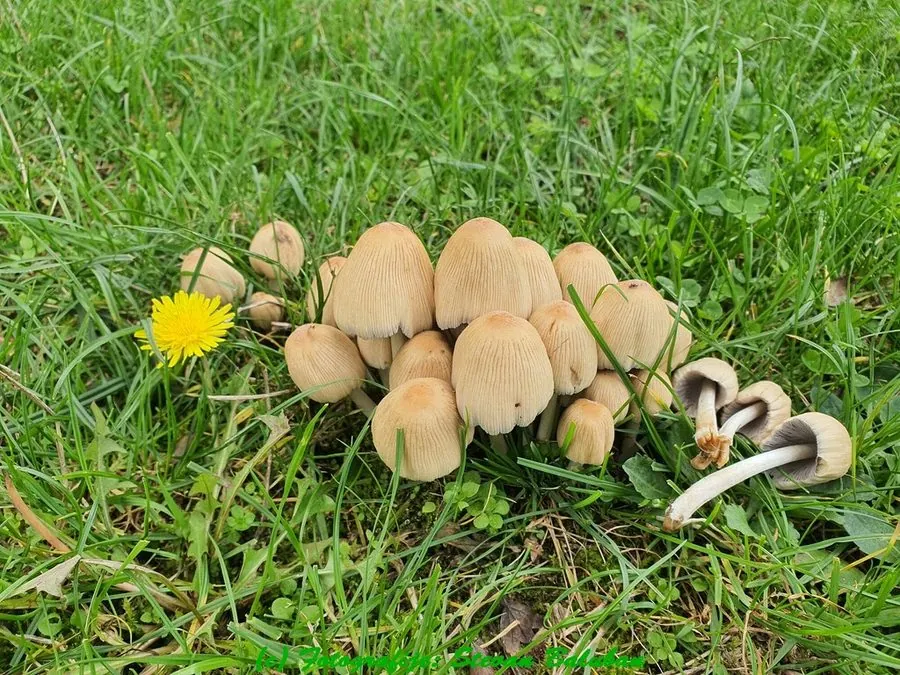

真菌 · 真菌界
晶粒鬼伞 Coprinellus micaceus

小脆柄菇科蘑菇，菌盖黄褐、幼时覆闪亮晶粒，成熟后自溶成墨汁，幼嫩时可食，但建议忌与酒同食。
- 分类
- 门担子菌门纲伞菌纲目伞菌目科小脆柄菇科属鬼伞属
- 栖息环境
- 阔叶树枯木、树桩与埋木处，雨后成群簇生
- 地理分布
- 北半球温带至亚热带广布，中国各地及欧洲、北美常见
- 保护级别
- 暂无评估；种群稳定
物种志
晶粒鬼伞的子实体小型，菌盖直径 2–5 厘米，初期卵形，后钟形至平展，表面黄褐至赭褐色，中央色深，幼时密布闪亮的云母状晶粒，边缘有条纹。菌肉薄，白色。菌褶白色，后变灰黑，密集，成熟时自溶成黑色墨汁状。菌柄长 3–8 厘米，直径 0.3–0.6 厘米，白色，中空，基部有白色绒毛。孢子印黑褐色。
晶粒鬼伞丛生于阔叶树的枯木、树桩与埋木处，春夏秋雨后成群发生，常数十朵簇生。幼嫩菌盖可食，须在菌褶变黑前采摘并煮熟；成熟后自溶成墨汁，无法食用。它不含鬼伞素，与酒同食一般不至于像墨汁鬼伞那样引起不适，但仍建议避免同时饮酒。采食时须与有毒的小型褐色蘑菇区分，并注意其生长基材是否被污染。
形态与习性
- 菌盖直径 2–5 厘米，黄褐色，幼时覆闪亮晶粒
- 菌褶白色后变灰黑，成熟自溶成墨汁
- 菌柄长 3–8 厘米，白色中空，基部有绒毛
- 孢子印黑褐色，孢子椭圆形
- 生境阔叶树枯木与树桩，雨后簇生
- 食用性幼嫩可食，须煮熟，建议不与酒同食
趣味知识
- 幼嫩菌盖上的闪亮颗粒像撒了一层云母粉，这是它名字“晶粒”的由来。
- 成熟后菌褶会自溶成黑色墨汁，这是鬼伞类独特的“自溶”现象。
- 它靠雨水和自身酶解把孢子散播出去，自溶后的墨汁可随雨水流布。
- 与墨汁鬼伞不同，晶粒鬼伞不含鬼伞素，但仍建议不要与酒同食。